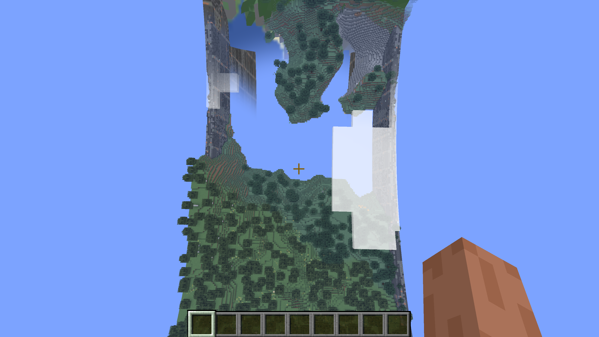
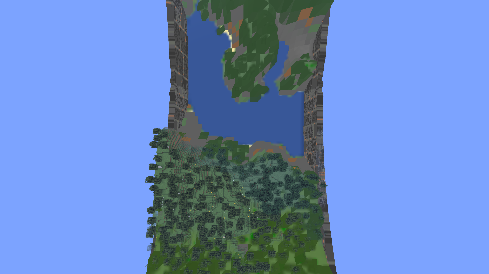

High-altitude terrain handoff
2,048 × 128 ring · ten-chunk render distance · Minecraft 26.1.2 Fabric · near X1193, Y235, Z0.

Before: lower terrain and water disappear; taller hills remain. Original owner capture, HUD and clouds visible.
After: Medium Atlas fills the lower terrain and lake. Native copied-world capture, HUD and clouds hidden; slightly different camera orientation.Both handoffs now account for vertical separation. Material blending, chunk budgets and ring curvature are retained.
Diagnosis and cross-version checks · Issue #266